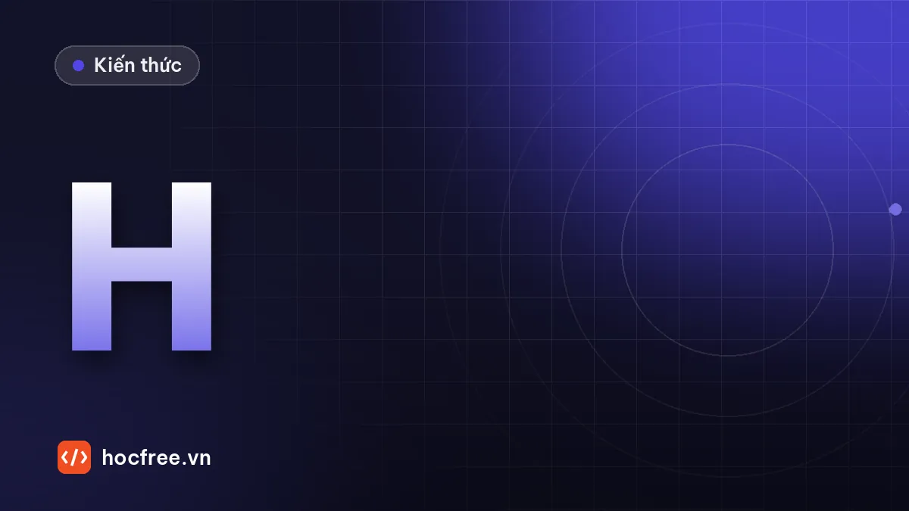

Homography: đo kích thước trên mặt phẳng khi camera đặt nghiêng
Tính homography từ điểm mốc, đổi pixel sang mm, RANSAC, nắn ảnh nhìn thẳng và tính bằng số sai số khi vật có chiều cao.

Học xong bài này, bạn sẽ
- Tính homography từ điểm chuẩn
- Đổi tọa độ pixel sang mm trên mặt phẳng
- Biết giới hạn khi vật có chiều cao
Nên học trước: Hiệu chuẩn camera: nội tại và méo ống kính
Nội dung bài viết
- 1. Homography là gì?
- 2. Cảnh mô phỏng: mặt bàn nhìn nghiêng 40°
- 3. Tính homography từ 4 điểm mốc
- 4. Đo khoảng cách giữa hai vật
- 5. Nhiều điểm hơn và RANSAC
- 6. Nắn ảnh về góc nhìn thẳng với warpPerspective
- 7. Giới hạn: vật có chiều cao
- 8. Độ phân giải không đều và cách kiểm chứng
- 9. Lỗi thường gặp
- 10. Bài tập
- Tóm tắt
Hai bài trước giả định camera nhìn vuông góc xuống vật (Quy đổi pixel sang mm và đánh giá sai số) và cho bạn công cụ bỏ méo ống kính (Hiệu chuẩn camera: nội tại và méo ống kính). Nhưng trong nhà máy, camera thường không thể đặt thẳng đứng: vướng xi lanh, vướng tay robot, phải nhìn qua khe giữa hai băng tải, hoặc một camera phải bao quát cả một bàn lớn. Khi đó tỉ lệ mm/pixel thay đổi liên tục trong ảnh: phần xa camera nhỏ hơn phần gần. Nếu mọi thứ cần đo nằm trên một mặt phẳng (mặt bàn, mặt băng tải, mặt tấm thép), một ma trận 3 × 3 gọi là homography quy đổi chính xác pixel sang mm trên mặt phẳng đó. Bài này dạy cách tính nó từ các điểm mốc, đo khoảng cách thật, nắn ảnh về góc nhìn thẳng, và quan trọng nhất: tính được bằng số sai bao nhiêu khi vật có chiều cao.
warpPerspective; tính sai số khi đo mặt trên của vật cao 20 mm và sửa nó.1. Homography là gì?
Với một camera không méo (hoặc đã khử méo), mọi điểm (X, Y) trên một mặt phẳng và ảnh (u, v) của nó liên hệ với nhau bằng một ma trận 3 × 3, viết trong tọa độ thuần nhất (homogeneous coordinates, thêm thành phần thứ ba rồi chia cho nó):
| u·w | | X | h11·X + h12·Y + h13 h21·X + h22·Y + h23
| v·w | = G · | Y | tức là u = ---------------------, v = ---------------------
| w | | 1 | h31·X + h32·Y + h33 h31·X + h32·Y + h33
Chiều ngược lại (pixel → mm) dùng H = G⁻¹: [X·s, Y·s, s]ᵀ = H · [u, v, 1]ᵀ- Ma trận có 9 số nhưng chỉ xác định tới một hệ số nhân (nhân cả ma trận với 2 không đổi gì), nên còn 8 bậc tự do. Mỗi cặp điểm (pixel ↔ mm) cho 2 phương trình, vậy cần ít nhất 4 cặp, trong đó không có 3 điểm nào thẳng hàng.
- Phép chia cho mẫu số (h31·X + h32·Y + h33) chính là hiệu ứng phối cảnh: khi camera nhìn thẳng, h31 = h32 = 0 và homography thu về phép affine, rồi về hệ số tỉ lệ của bài Quy đổi pixel sang mm.
- Nguồn gốc: với camera K, tư thế R, t, điểm trên mặt phẳng Z = 0 chiếu thành K · [r1 r2 t] · [X, Y, 1]ᵀ, nên G = K · [r1 r2 t]. Mục 7 dùng công thức này để tính homography cho mặt phẳng ở độ cao khác.
- Homography là phép biến đổi "thẳng thành thẳng". Méo ống kính bẻ cong đường thẳng nên không thể mô tả bằng homography: luôn khử méo điểm (
cv2.undistortPoints(..., P=K)) trước khi dùng homography.
2. Cảnh mô phỏng: mặt bàn nhìn nghiêng 40°
Ta dựng một cảnh có đáp án: camera 1280 × 960, fx = 1700 px (đã khử méo, như sau bài trước), đặt cao 420 mm, lùi về phía trước bàn 260 mm, nhìn chéo xuống với trục quang lệch khoảng 40° so với phương thẳng đứng. Trên bàn có 9 điểm mốc tròn Ø10 mm, tâm ở lưới 150 × 100 mm (X = 0, 150, 300; Y = 0, 100, 200), và hai vòng đệm Ø30 mm đặt tùy ý. Cách vẽ giống bài trước: mỗi pixel được đưa ngược về mặt bàn bằng homography, tô màu theo khoảng cách có dấu tới biên hình, có làm mịn biên, mờ và nhiễu.
import json
import cv2
import numpy as np
W, H = 1280, 960
K = np.array([[1700.0, 0, 640], [0, 1700.0, 480], [0, 0, 1]])
C = np.array([150.0, -260.0, 420.0]) # tâm camera trong hệ tọa độ bàn (mm), trục Z hướng lên
nhin = np.array([150.0, 100.0, 0.0]) # điểm camera nhìn vào
z = (nhin - C) / np.linalg.norm(nhin - C) # trục quang
x = np.array([1.0, 0.0, 0.0]) # trục u của ảnh song song trục X của bàn
y = np.cross(z, x)
R = np.vstack([x, y, z]) # hệ bàn → hệ camera
t = -R @ C
G = K @ np.column_stack([R[:, 0], R[:, 1], t]) # (X, Y, 1) trên bàn → pixel: homography "thật"
print(f"Trục quang lệch {np.degrees(np.arccos(-z[2])):.1f}° so với phương thẳng đứng")
MOC = [(X, Y) for Y in (0, 100, 200) for X in (0, 150, 300)] # 9 mốc Ø10 mm
VONG_DEM = [(82.0, 47.0), (231.0, 158.0)] # 2 vòng đệm Ø30 mm
HINH = [(X, Y, 5.0, 40.0) for X, Y in MOC] + [(X, Y, 15.0, 70.0) for X, Y in VONG_DEM]
uu, vv = np.meshgrid(np.arange(W, dtype=np.float64), np.arange(H, dtype=np.float64))
Gi = np.linalg.inv(G) # pixel → bàn
m = Gi[2, 0] * uu + Gi[2, 1] * vv + Gi[2, 2]
Xb = (Gi[0, 0] * uu + Gi[0, 1] * vv + Gi[0, 2]) / m
Yb = (Gi[1, 0] * uu + Gi[1, 1] * vv + Gi[1, 2]) / m
p = np.maximum(np.hypot(*np.gradient(Xb)), np.hypot(*np.gradient(Yb))) # mm/pixel tại chỗ
anh = np.full((H, W), 200.0)
for cx, cy, r, muc in HINH:
phu = np.clip(0.5 - (np.hypot(Xb - cx, Yb - cy) - r) / p, 0, 1) # tỉ lệ pixel bị hình che
anh = anh * (1 - phu) + muc * phu
anh = cv2.GaussianBlur(anh, (0, 0), 0.8) + np.random.default_rng(2).normal(0, 2.0, anh.shape)
cv2.imwrite("ban_nghieng.png", np.clip(np.round(anh), 0, 255).astype(np.uint8))
json.dump({"K": K.tolist(), "R": R.tolist(), "t": t.tolist(), "moc": MOC, "vong_dem": VONG_DEM},
open("dap_an.json", "w"))
for ten, (X, Y) in (("gần camera (150, 0)", (150, 0)), ("xa camera (150, 200)", (150, 200))):
v = G @ [X, Y, 1]
print(f"Mốc {ten}: ở pixel ({v[0] / v[2]:.1f}, {v[1] / v[2]:.1f}), {p[int(v[1] / v[2]), int(v[0] / v[2])]:.3f} mm/px")Trục quang lệch 40.6° so với phương thẳng đứng
Mốc gần camera (150, 0): ở pixel (640.0, 744.4), 0.334 mm/px
Mốc xa camera (150, 200): ở pixel (640.0, 271.2), 0.535 mm/pxHai dòng cuối cho thấy vấn đề: cùng một ảnh, gần camera 1 pixel ứng với khoảng 0,33 mm, xa camera tới 0,54 mm, tức chênh khoảng 60%. Không hệ số tỉ lệ nào dùng chung được cho cả ảnh.
3. Tính homography từ 4 điểm mốc
Quy trình tại hiện trường: đặt (hoặc khắc, dán) các điểm mốc có tọa độ đã biết trên mặt phẳng làm việc, chụp ảnh, tìm tâm mốc trên ảnh, ghép cặp với tọa độ mm, rồi gọi cv2.findHomography(pixel, mm). Bước ghép cặp là chỗ hay sai nhất. Ở đây ta lấy 4 mốc ở bốn góc vùng làm việc, nhận diện chúng bằng mẹo tổng/hiệu tọa độ: góc trên trái có u + v nhỏ nhất, góc dưới phải có u + v lớn nhất, góc trên phải có u − v lớn nhất, góc dưới trái có u − v nhỏ nhất. 5 mốc còn lại để dành kiểm chứng độc lập.
import cv2
import numpy as np
anh = cv2.imread("ban_nghieng.png", cv2.IMREAD_GRAYSCALE)
def tim_dom_toi(anh):
"""Tâm (trọng tâm có trọng số theo độ tối) và diện tích của các vùng tối."""
_, nhi_phan = cv2.threshold(anh, 0, 255, cv2.THRESH_BINARY_INV + cv2.THRESH_OTSU)
n, nhan, st, _ = cv2.connectedComponentsWithStats(nhi_phan)
nen = float(np.median(anh))
kq = []
for i in range(1, n):
x, y, w, h, dt = st[i]
if dt < 50:
continue
x, y = x - 3, y - 3
roi = anh[y:y + h + 6, x:x + w + 6].astype(np.float64)
ts = np.clip(nen - roi, 0, None) # trọng số: độ tối so với nền
yy, xx = np.mgrid[0:roi.shape[0], 0:roi.shape[1]]
kq.append((x + (ts * xx).sum() / ts.sum(), y + (ts * yy).sum() / ts.sum(), dt))
return kq
dom = tim_dom_toi(anh)
moc_px = np.array([(u, v) for u, v, dt in dom if dt < 2500]) # mốc nhỏ; vòng đệm lớn hơn nhiều
print(f"Tìm thấy {len(dom)} vùng tối, trong đó {len(moc_px)} điểm mốc")
s, d = moc_px.sum(axis=1), moc_px[:, 0] - moc_px[:, 1]
bon_goc_px = moc_px[[np.argmin(s), np.argmax(d), np.argmax(s), np.argmin(d)]] # TL, TR, BR, BL trên ảnh
bon_goc_mm = np.array([(0, 200), (300, 200), (300, 0), (0, 0)], np.float64) # xa camera ở phía trên ảnh
Hm, _ = cv2.findHomography(bon_goc_px, bon_goc_mm) # pixel → mm, đúng 4 điểm: nghiệm chính xác
np.set_printoptions(precision=6, suppress=True)
print("H (pixel → mm) =\n", Hm / Hm[2, 2])
def px_sang_mm(H, pts):
return cv2.perspectiveTransform(np.asarray(pts, np.float64).reshape(-1, 1, 2), H).reshape(-1, 2)
# Kiểm chứng: 5 mốc KHÔNG dùng để tính H
mm_do = px_sang_mm(Hm, moc_px)
print("mốc kiểm chứng (mm, đáp án) → đo được, sai số")
for X, Y in [(150, 0), (0, 100), (150, 100), (300, 100), (150, 200)]:
i = np.argmin(np.linalg.norm(mm_do - (X, Y), axis=1))
e = np.linalg.norm(mm_do[i] - (X, Y))
print(f" ({X:3d}, {Y:3d}) → ({mm_do[i, 0]:8.3f}, {mm_do[i, 1]:8.3f}), sai {e:.3f} mm")Tìm thấy 11 vùng tối, trong đó 9 điểm mốc
H (pixel → mm) =
[[ 0.429308 0.099773 -124.7468 ]
[ 0.000003 -0.498864 371.423678]
[ 0. 0.000665 1. ]]
mốc kiểm chứng (mm, đáp án) → đo được, sai số
(150, 0) → ( 150.000, -0.000), sai 0.000 mm
( 0, 100) → ( 0.001, 100.000), sai 0.001 mm
(150, 100) → ( 150.004, 99.997), sai 0.005 mm
(300, 100) → ( 299.994, 99.998), sai 0.006 mm
(150, 200) → ( 150.003, 199.996), sai 0.005 mmHàng thứ ba của H (h31, h32 khác 0) là dấu vết của góc nghiêng. Năm mốc kiểm chứng sai dưới 0,01 mm, nhỏ hơn rất nhiều so với cỡ pixel 0,33–0,54 mm, nhờ tâm mốc được tính subpixel từ hàng trăm pixel. Đây là mô phỏng sạch (mốc in chính xác tuyệt đối, mặt bàn phẳng tuyệt đối); thực tế thường được vài phần trăm tới một phần mười milimét, tùy độ chính xác của tấm mốc. Đây là con số bạn ghi vào hồ sơ hiệu chuẩn: sai số trên điểm không dùng để fit, không phải phần dư trên chính 4 điểm dùng để fit (luôn bằng 0 với đúng 4 điểm).
4. Đo khoảng cách giữa hai vật
Có hai cách lấy tâm vòng đệm: (a) lấy trọng tâm vùng tối trên ảnh rồi quy đổi sang mm; (b) quy đổi các điểm biên sang mm trước, rồi fit đường tròn trong mặt phẳng thật. Cách (b) đúng về hình học vì trên mặt phẳng, biên lại là đường tròn thật.
import json
import cv2
import numpy as np
def fit_tron(P):
"""Fit đường tròn bình phương tối thiểu (Kasa): trả về tâm (a, b) và bán kính."""
x, y = P[:, 0], P[:, 1]
A = np.column_stack([x, y, np.ones_like(x)])
D, E, F = np.linalg.lstsq(A, -(x ** 2 + y ** 2), rcond=None)[0]
a, b = -D / 2, -E / 2
return np.array([a, b]), np.sqrt(a * a + b * b - F)
def bien_subpixel(anh, tam, so_tia=72, dai=60):
"""Tia hướng tâm từ `tam` (pixel): mỗi tia cho 1 điểm biên subpixel ở mức 50% giữa vật và nền."""
a = anh.astype(np.float32)
diem = []
for g in np.linspace(0, 2 * np.pi, so_tia, endpoint=False):
s = np.arange(0, dai, 0.5)
mx = (tam[0] + s * np.cos(g)).astype(np.float32).reshape(1, -1)
my = (tam[1] + s * np.sin(g)).astype(np.float32).reshape(1, -1)
prof = cv2.remap(a, mx, my, cv2.INTER_LINEAR).ravel()
muc = (prof[:4].mean() + prof[-4:].mean()) / 2
k = int(np.argmax(prof > muc)) # mẫu đầu tiên sáng hơn mức 50%
r = s[k - 1] + 0.5 * (muc - prof[k - 1]) / (prof[k] - prof[k - 1])
diem.append((tam[0] + r * np.cos(g), tam[1] + r * np.sin(g)))
return np.array(diem)
dap_an = json.load(open("dap_an.json"))
vd_px = [np.array([u, v]) for u, v, dt in dom if dt >= 2500]
vd_px.sort(key=lambda q: q[0]) # vòng đệm trái trước
tam_a, tam_b = [], []
for q in vd_px:
tam_a.append(px_sang_mm(Hm, q)[0]) # (a) trọng tâm ảnh → mm
b_mm = px_sang_mm(Hm, bien_subpixel(anh, q)) # (b) biên → mm → fit tròn
c, r = fit_tron(b_mm)
tam_b.append(c)
print(f"Vòng đệm: (a) tâm {np.round(tam_a[-1], 3)}, (b) tâm {np.round(c, 3)}, Ø {2 * r:.3f} mm")
that = np.linalg.norm(np.subtract(*dap_an["vong_dem"]))
for ten, T in (("(a) trọng tâm ảnh", tam_a), ("(b) fit biên trong mm", tam_b)):
L = np.linalg.norm(T[1] - T[0])
print(f"Khoảng cách {ten:22s}: {L:8.3f} mm, sai {L - that:+.3f} mm (thật {that:.3f})")Vòng đệm: (a) tâm [82. 46.75], (b) tâm [82.006 47.032], Ø 30.006 mm
Vòng đệm: (a) tâm [231. 157.777], (b) tâm [231. 158.023], Ø 29.989 mm
Khoảng cách (a) trọng tâm ảnh : 185.817 mm, sai +0.016 mm (thật 185.801)
Khoảng cách (b) fit biên trong mm : 185.790 mm, sai -0.011 mm (thật 185.801)Đáp án đặt tâm vòng đệm ở (82, 47) và (231, 158). Cách (b) tìm lại tâm sai dưới 0,04 mm và đường kính Ø30 mm sai dưới 0,02 mm. Cách (a) lệch tâm khoảng 0,25 mm về phía gần camera (Y nhỏ hơn). Ở ví dụ này hai vòng đệm lệch gần như nhau nên khoảng cách vẫn gần đúng, nhưng vị trí tuyệt đối (thứ robot cần để gắp) sai 0,25 mm, và với hai vật khác cỡ hoặc ở hai vùng nghiêng khác nhau thì khoảng cách cũng sai. Quy tắc: đo hình học trong mặt phẳng thật, nghĩa là đổi điểm biên sang mm rồi mới fit đường, fit tròn, tính khoảng cách. Các phép đo trên ảnh nghiêng (trọng tâm, diện tích, minAreaRect) đều bị phối cảnh làm méo.
5. Nhiều điểm hơn và RANSAC
Với hơn 4 điểm, findHomography giải bình phương tối thiểu, nhiễu được trung bình hóa. Nhưng một cặp ghép sai (gõ nhầm tọa độ, nhận nhầm mốc) sẽ kéo lệch cả lời giải. Tham số cv2.RANSAC thử nhiều bộ 4 điểm ngẫu nhiên, giữ bộ có nhiều điểm "đồng thuận" nhất (sai số chiếu dưới ngưỡng ransacReprojThreshold, ở đây tính bằng mm vì đích là mm), rồi fit lại trên các điểm đồng thuận. mask trả về cho biết điểm nào bị loại.
import cv2
import numpy as np
# Ghép cặp đủ 9 mốc: dùng H 4 điểm để biết mốc nào là mốc nào, rồi cố tình gõ nhầm một tọa độ
mm_du_doan = np.round(px_sang_mm(Hm, moc_px) / 50) * 50 # làm tròn về lưới 50 mm gần nhất
mm_khai_bao = mm_du_doan.copy()
i_sai = int(np.argmin(np.linalg.norm(mm_khai_bao - (150, 100), axis=1)))
mm_khai_bao[i_sai] = (150, 110) # mốc giữa bị khai báo lệch 10 mm
for ten, pp in (("bình phương tối thiểu", 0), ("RANSAC ngưỡng 1 mm", cv2.RANSAC)):
H9, mask = cv2.findHomography(moc_px, mm_khai_bao, pp, 1.0)
du = np.linalg.norm(px_sang_mm(H9, moc_px) - mm_du_doan, axis=1) # so với tọa độ đúng
loai = np.where(mask.ravel() == 0)[0].tolist() if pp == cv2.RANSAC else "(không loại điểm nào)"
print(f"{ten:22s}: điểm bị loại {loai}, "
f"sai lớn nhất trên các mốc khác mốc gõ nhầm {np.delete(du, i_sai).max():.3f} mm")
print("chỉ số mốc gõ nhầm:", i_sai)bình phương tối thiểu : điểm bị loại (không loại điểm nào), sai lớn nhất trên các mốc khác mốc gõ nhầm 1.516 mm
RANSAC ngưỡng 1 mm : điểm bị loại [4], sai lớn nhất trên các mốc khác mốc gõ nhầm 0.004 mm
chỉ số mốc gõ nhầm: 4Bình phương tối thiểu không loại điểm nào và "chia" lỗi 10 mm cho mọi mốc: các mốc đúng bị lệch tới 1,5 mm, hỏng cả vùng làm việc. RANSAC loại đúng mốc gõ nhầm. Trong hiệu chuẩn, đừng để RANSAC âm thầm sửa lỗi: nếu có điểm bị loại, hãy in ra, tìm nguyên nhân (nhận nhầm mốc, mốc bị bẩn, gõ sai) và hiệu chuẩn lại với dữ liệu sạch. RANSAC thật sự cần thiết khi điểm tương ứng đến từ thuật toán tự động (so khớp đặc trưng), nơi ghép nhầm là chuyện thường.
6. Nắn ảnh về góc nhìn thẳng với warpPerspective
Muốn chạy các thuật toán giả định nhìn thẳng (so khớp mẫu, OCR, đo bằng tỉ lệ cố định) trên ảnh nghiêng, ta nắn ảnh thành ảnh "nhìn từ trên xuống" với tỉ lệ chọn trước, ví dụ S = 2 pixel/mm. Ma trận cho ảnh đích là ghép của H (pixel → mm) với một phép đổi mm → pixel đích (nhân S, dịch gốc để chừa lề).
import cv2
import numpy as np
S, LE = 2.0, 20.0 # 2 px/mm, lề 20 mm quanh vùng 300 × 200 mm
A = np.array([[S, 0, S * LE], # mm → pixel ảnh nắn; lật trục Y để Y lớn ở trên
[0, -S, S * (200 + LE)],
[0, 0, 1]])
rong, cao = int(S * (300 + 2 * LE)), int(S * (200 + 2 * LE))
thang = cv2.warpPerspective(anh, A @ Hm, (rong, cao), flags=cv2.INTER_LINEAR, borderValue=0)
cv2.imwrite("ban_nhin_thang.png", thang)
print(f"Ảnh nắn {rong}×{cao} px, 1 px = {1 / S} mm ở mọi nơi")
# Trên ảnh nắn, đo bằng tỉ lệ cố định như bài "Quy đổi pixel sang mm"
_, bw = cv2.threshold(thang, 0, 255, cv2.THRESH_BINARY_INV + cv2.THRESH_OTSU)
bw[thang == 0] = 0 # bỏ vùng ngoài ảnh gốc (màu viền)
cs, _ = cv2.findContours(bw, cv2.RETR_EXTERNAL, cv2.CHAIN_APPROX_NONE)
for c in sorted([c for c in cs if cv2.contourArea(c) > 1000], key=lambda c: cv2.boundingRect(c)[0]):
(x, y), r = cv2.minEnclosingCircle(c)
X, Y = x / S - LE, 200 + LE - y / S
print(f"Vòng đệm trên ảnh nắn: tâm ({X:.2f}, {Y:.2f}) mm, Ø ≈ {2 * r / S:.2f} mm")Ảnh nắn 680×480 px, 1 px = 0.5 mm ở mọi nơi
Vòng đệm trên ảnh nắn: tâm (82.00, 47.06) mm, Ø ≈ 29.95 mm
Vòng đệm trên ảnh nắn: tâm (231.00, 158.05) mm, Ø ≈ 29.93 mmẢnh nắn tiện cho hiển thị, cho OCR và so khớp mẫu, nhưng chú ý ba điều: (1) phần xa camera bị nội suy phóng to từ ít pixel hơn, nên mờ hơn phần gần; chọn S không lớn hơn nhiều so với độ phân giải thật ở vùng xa (ở đây khoảng 1/0,54 ≈ 1,9 px/mm, nên S = 2 là vừa sát giới hạn); (2) đo trên ảnh nắn bằng contour nguyên pixel chỉ chính xác cỡ 1/S; (3) với đo lường chính xác, đo biên subpixel trên ảnh gốc rồi đổi điểm như mục 4, đừng nắn ảnh.
7. Giới hạn: vật có chiều cao
Homography chỉ đúng cho điểm nằm trên mặt phẳng hiệu chuẩn. Một điểm ở mặt trên của hộp cao h được camera nhìn thấy dọc theo một tia; homography của mặt bàn "tưởng" điểm đó nằm ở chỗ tia cắt mặt bàn, xa hơn về phía sau. Độ dịch bằng h nhân với tan của góc giữa tia và phương thẳng đứng, nên lớn nhất khi camera nghiêng nhiều. Tính bằng số:
import json
import cv2
import numpy as np
da = json.load(open("dap_an.json"))
K, R, t = np.array(da["K"]), np.array(da["R"]), np.array(da["t"])
rvec = cv2.Rodrigues(R)[0]
def H_mat_phang(h):
"""Homography pixel → mm cho mặt phẳng Z = h: G = K·[r1 r2 (h·r3 + t)]."""
G = K @ np.column_stack([R[:, 0], R[:, 1], h * R[:, 2] + t])
return np.linalg.inv(G)
print("Điểm mặt trên của vật cao h, đo bằng homography mặt bàn (đơn vị mm)")
print(" vị trí (X, Y) h → đo được (X, Y) sai lệch | dùng H của mặt Z = h")
for X, Y in [(150, 0), (150, 100), (150, 200), (0, 200)]:
for h in (2.0, 20.0):
uv = cv2.projectPoints(np.array([[X, Y, h]], np.float64), rvec, t, K, None)[0].reshape(1, 2)
do = px_sang_mm(Hm, uv)[0]
sua = px_sang_mm(H_mat_phang(h), uv)[0]
print(f" ({X:3d}, {Y:3d}) {h:4.0f} → ({do[0]:7.2f}, {do[1]:7.2f}) {np.linalg.norm(do - (X, Y)):6.2f} "
f"| ({sua[0]:7.2f}, {sua[1]:7.2f})")
# Khoảng cách 100 mm đo trên mặt trên của tấm dày 20 mm
a, b = np.array([[100, 100, 20.0]]), np.array([[200, 100, 20.0]])
uv = cv2.projectPoints(np.vstack([a, b]), rvec, t, K, None)[0].reshape(2, 2)
L = np.linalg.norm(np.subtract(*px_sang_mm(Hm, uv)))
print(f"Đoạn 100 mm trên mặt cao 20 mm, đo bằng H mặt bàn: {L:.2f} mm (sai {100 * (L / 100 - 1):+.1f}%)")Điểm mặt trên của vật cao h, đo bằng homography mặt bàn (đơn vị mm)
vị trí (X, Y) h → đo được (X, Y) sai lệch | dùng H của mặt Z = h
(150, 0) 2 → ( 150.00, 1.28) 1.28 | ( 150.00, 0.00)
(150, 0) 20 → ( 150.00, 13.03) 13.03 | ( 150.00, -0.00)
(150, 100) 2 → ( 150.00, 101.75) 1.75 | ( 150.00, 100.00)
(150, 100) 20 → ( 150.00, 118.03) 18.03 | ( 150.00, 100.00)
(150, 200) 2 → ( 150.00, 202.23) 2.23 | ( 150.00, 200.00)
(150, 200) 20 → ( 150.00, 223.02) 23.02 | ( 150.00, 200.00)
( 0, 200) 2 → ( -0.72, 202.23) 2.34 | ( -0.00, 200.00)
( 0, 200) 20 → ( -7.50, 223.03) 24.22 | ( -0.00, 200.00)
Đoạn 100 mm trên mặt cao 20 mm, đo bằng H mặt bàn: 105.00 mm (sai +5.0%)Đọc bảng:
- Chỉ 2 mm chiều cao (một tấm thép mỏng) đã làm vị trí lệch khoảng 1,3–2,3 mm, gấp hàng trăm lần sai số hiệu chuẩn. Với 20 mm, lệch 13–24 mm. Vị trí càng xa camera, tia càng xiên, lệch càng lớn.
- Kích thước cũng sai: đoạn 100 mm trên mặt cao 20 mm đo thành lớn hơn khoảng 5%, vì mặt trên gần camera hơn nên "to" hơn.
- Cột cuối: nếu biết trước chiều cao h, dùng homography của mặt phẳng Z = h (từ K, R, t) cho kết quả đúng. Cách làm ngoài hiện trường đơn giản hơn: đặt tấm mốc lên đúng độ cao mặt cần đo (kê căn đệm) rồi hiệu chuẩn homography riêng cho độ cao đó.
| Tình huống | Giải pháp |
|---|---|
| Mọi vật cùng một chiều cao đã biết (tấm cùng độ dày) | Hiệu chuẩn homography ở mặt trên của vật (tấm mốc kê cao đúng bằng độ dày) |
| Vài loại sản phẩm, mỗi loại một chiều cao | Lưu một homography cho mỗi chiều cao, hoặc lưu K, R, t và tính H(h) như code trên |
| Chiều cao thay đổi không biết trước | Không dùng được homography một mặt phẳng: cần đo chiều cao (cảm biến laser, camera 3D) hoặc đặt camera thẳng đứng + ống kính telecentric |
| Robot gắp vật trên băng tải | Hiệu chuẩn ở độ cao điểm gắp; bài Hand-eye calibration camera – robot |
8. Độ phân giải không đều và cách kiểm chứng
Ở góc nghiêng lớn, độ phân giải ở phía xa kém hơn phía gần (mục 2: 0,33 so với 0,54 mm/px). Sai số tìm biên tính bằng pixel thì như nhau khắp ảnh, nên sai số tính bằng mm ở phía xa lớn hơn theo đúng tỉ lệ đó. Khi thiết kế, kiểm tra điều kiện cho vùng kém nhất: ví dụ yêu cầu đo ±0,2 mm và thuật toán biên chính xác 0,1 px thì vùng xa cho khoảng 0,054 mm, vẫn đạt; nhưng nếu góc nghiêng 60°, tỉ lệ xa/gần có thể gấp 3–4 lần.
Quy trình kiểm chứng sau khi hiệu chuẩn homography:
- Dùng ít nhất 4 mốc ở bốn góc vùng làm việc (không phải bốn góc ảnh) để tính H; thêm mốc nếu có thể (8–12 mốc trải đều) và dùng bình phương tối thiểu.
- Kiểm tra trên các mốc độc lập hoặc một tấm chuẩn khác: sai số lớn nhất phải nhỏ hơn khoảng 1/10 dung sai cần đo.
- Đặt một vật chuẩn có kích thước đã biết (thước kính, căn mẫu) ở nhiều vị trí và nhiều hướng: kết quả phải như nhau ở gần, ở xa, ở trái, ở phải. Sai lớn ở mép ảnh: kiểm tra lại khử méo. Sai đều theo một hướng: kiểm tra tọa độ khai báo của mốc.
- Lưu H kèm ảnh hiệu chuẩn, tọa độ mốc, độ cao mặt phẳng và ngày; mọi va chạm vào giá camera đều làm H mất hiệu lực (bài Kiểm tra hiệu chuẩn định kỳ).
9. Lỗi thường gặp
- Đảo thứ tự trục: truyền (y, x) thay cho (x, y), hoặc tọa độ mm theo thứ tự mốc khác thứ tự pixel. Luôn vẽ số thứ tự mốc lên ảnh khi hiệu chuẩn.
- Dùng getPerspectiveTransform/findHomography theo chiều ngược: H(mm → pixel) trong khi code cần pixel → mm. Nhớ: hàm tính phép biến đổi từ tham số thứ nhất sang tham số thứ hai.
- Bốn mốc chụm ở giữa ảnh: mọi điểm ngoài vùng 4 mốc là ngoại suy, sai số tăng nhanh (bài tập 3).
- Quên khử méo: homography không biểu diễn được đường cong.
- Đo trọng tâm, diện tích, bán kính trên ảnh nghiêng rồi mới quy đổi, thay vì đổi điểm biên sang mm trước.
- Hiệu chuẩn trên mặt bàn, đo trên mặt trên của vật dày: sai cỡ milimét như mục 7.
10. Bài tập
Bài 1 (bài thực hành của bài học). Đặt 4 điểm mốc đã biết tọa độ trên bàn, tính homography và đo khoảng cách giữa hai vật bất kỳ. Dữ liệu từ một lần thử thật: 4 mốc ở góc tờ giấy A3 (420 × 297 mm) có tâm ảnh lần lượt (212,4; 168,9), (1093,7; 181,2), (1201,5; 902,8), (96,3; 880,1) ứng với (0, 0), (420, 0), (420, 297), (0, 297) mm. Hai vật có tâm ảnh (402,0; 455,5) và (911,2; 610,3). Tính khoảng cách giữa hai vật. Sau đó trả lời: để tin con số này bạn còn cần kiểm tra gì?
Xem đáp án
import cv2
import numpy as np
px = np.float32([[212.4, 168.9], [1093.7, 181.2], [1201.5, 902.8], [96.3, 880.1]])
mm = np.float32([[0, 0], [420, 0], [420, 297], [0, 297]])
H = cv2.getPerspectiveTransform(px, mm) # đúng 4 điểm: nghiệm chính xác
vat = np.float32([[[402.0, 455.5]], [[911.2, 610.3]]])
a, b = cv2.perspectiveTransform(vat, H).reshape(2, 2)
print(f"Vật 1 tại ({a[0]:.1f}, {a[1]:.1f}) mm, vật 2 tại ({b[0]:.1f}, {b[1]:.1f}) mm")
print(f"Khoảng cách: {np.linalg.norm(a - b):.1f} mm")
# Nếu chỉ dùng một tỉ lệ chung (cạnh trên của tờ giấy) như khi coi camera nhìn thẳng:
ti_le = 420 / np.linalg.norm(px[1] - px[0])
print(f"Nếu dùng tỉ lệ chung {ti_le:.4f} mm/px: {np.linalg.norm(vat[0, 0] - vat[1, 0]) * ti_le:.1f} mm")Vật 1 tại (102.7, 134.4) mm, vật 2 tại (318.5, 194.2) mm
Khoảng cách: 223.9 mm
Nếu dùng tỉ lệ chung 0.4765 mm/px: 253.6 mmCần kiểm tra thêm: (1) tâm "vật" được lấy đúng cách: với vật lớn hoặc có chiều cao, lấy biên rồi đổi sang mm như mục 4, và tính sai lệch do chiều cao như mục 7; (2) ảnh đã khử méo chưa; (3) thứ tự 4 mốc khớp thứ tự tọa độ mm (vẽ số lên ảnh); (4) đặt một thước có vạch ở vài vị trí trong vùng 4 mốc và đo: sai số phải nhỏ so với nhu cầu. Chỉ có 4 mốc thì không có phần dư nào để đánh giá, nên bước (4) là bắt buộc. Dòng cuối cho thấy dùng một tỉ lệ chung trên ảnh nghiêng sai hàng chục milimét.
Bài 2. Camera của mục 2 dùng để kiểm tra vị trí nắp hộp cao 35 mm. Kỹ sư hiệu chuẩn homography trên mặt bàn. (a) Ước lượng bằng công thức lệch ≈ h · tan(góc tia so với phương thẳng đứng) cho điểm (150, 100) và so với kết quả chiếu chính xác. (b) Nếu yêu cầu sai số vị trí 0,5 mm, chiều cao hộp được phép dao động bao nhiêu khi dùng homography hiệu chuẩn ở đúng mặt nắp?
Xem đáp án
import json
import cv2
import numpy as np
da = json.load(open("dap_an.json"))
K, R, t = np.array(da["K"]), np.array(da["R"]), np.array(da["t"])
C = -R.T @ t # tâm camera trong hệ bàn
P = np.array([150.0, 100.0, 35.0])
tia = P - C
goc = np.degrees(np.arctan2(np.hypot(tia[0], tia[1]), -tia[2]))
print(f"Tia tới điểm lệch {goc:.1f}° so với phương thẳng đứng → lệch ước lượng {35 * np.tan(np.radians(goc)):.2f} mm")
uv = cv2.projectPoints(P.reshape(1, 3), cv2.Rodrigues(R)[0], t, K, None)[0].reshape(1, 1, 2)
Hban = np.linalg.inv(K @ np.column_stack([R[:, 0], R[:, 1], t]))
do = cv2.perspectiveTransform(uv, Hban).ravel()
print(f"Chiếu chính xác: đo được ({do[0]:.2f}, {do[1]:.2f}), lệch {np.linalg.norm(do - P[:2]):.2f} mm")
print(f"Dao động chiều cao cho phép với sai số 0,5 mm: ±{0.5 / np.tan(np.radians(goc)):.2f} mm")Tia tới điểm lệch 43.1° so với phương thẳng đứng → lệch ước lượng 32.73 mm
Chiếu chính xác: đo được (150.00, 132.73), lệch 32.73 mm
Dao động chiều cao cho phép với sai số 0,5 mm: ±0.53 mmCông thức đơn giản khớp hoàn toàn với phép chiếu chính xác: nó chỉ là tam giác đồng dạng dọc theo tia, miễn là dùng đúng góc của tia tới điểm đó (ở đây 43°, lớn hơn góc trục quang 40,6° vì điểm nằm cao hơn mặt bàn). Mỗi milimét chiều cao gây khoảng 0,94 mm lệch vị trí: dù hiệu chuẩn đúng mặt nắp, chiều cao hộp chỉ được dao động khoảng ±0,5 mm. Nếu hộp có dung sai chiều cao lớn hơn, phải đặt camera gần thẳng đứng hơn hoặc đo chiều cao từng hộp.
Bài 3. So sánh hai cách đặt 4 mốc: (A) ở bốn góc vùng 300 × 200 mm, (B) chụm trong vùng 60 × 40 mm ở giữa. Với nhiễu tìm tâm mốc 0,1 px, mô phỏng 200 lần, tính sai số trung bình khi quy đổi điểm (300, 200) ở góc xa.
Xem đáp án
import json
import cv2
import numpy as np
da = json.load(open("dap_an.json"))
K, R, t = np.array(da["K"]), np.array(da["R"]), np.array(da["t"])
G = K @ np.column_stack([R[:, 0], R[:, 1], t]) # mm → pixel thật
def chieu(G, pts):
return cv2.perspectiveTransform(np.asarray(pts, np.float64).reshape(-1, 1, 2), G).reshape(-1, 2)
rng = np.random.default_rng(0)
dich = chieu(G, [(300, 200)])
for ten, moc in (("(A) 4 góc 300×200", [(0, 0), (300, 0), (300, 200), (0, 200)]),
("(B) chụm 60×40 ", [(120, 80), (180, 80), (180, 120), (120, 120)])):
moc = np.array(moc, np.float64)
px_that = chieu(G, moc)
sai = []
for _ in range(200):
Hn, _ = cv2.findHomography(px_that + rng.normal(0, 0.1, px_that.shape), moc)
sai.append(np.linalg.norm(chieu(Hn, dich)[0] - (300, 200)))
print(f"{ten}: sai số tại (300, 200) trung bình {np.mean(sai):.3f} mm, lớn nhất {np.max(sai):.3f} mm")(A) 4 góc 300×200: sai số tại (300, 200) trung bình 0.056 mm, lớn nhất 0.159 mm
(B) chụm 60×40 : sai số tại (300, 200) trung bình 0.852 mm, lớn nhất 2.950 mmCùng nhiễu 0,1 px, mốc chụm cho sai số ở góc xa lớn hơn khoảng 15 lần (trung bình 0,85 mm so với 0,06 mm, có lần gần 3 mm): đó là ngoại suy. Quy tắc: mốc phải bao trùm toàn bộ vùng cần đo, tốt nhất có thêm mốc ở giữa và ở cạnh để kiểm chứng.
Tóm tắt
- Homography là ma trận 3 × 3 (8 bậc tự do) nối pixel với tọa độ trên một mặt phẳng; cần ≥ 4 cặp điểm, không 3 điểm thẳng hàng; chỉ dùng trên điểm đã khử méo.
cv2.findHomography(pixel, mm)cho pixel → mm;cv2.perspectiveTransformđể đổi điểm; với đúng 4 điểm có thể dùnggetPerspectiveTransform. Nhiều điểm: bình phương tối thiểu; có thể có cặp sai: RANSAC, và in ra điểm bị loại.- Kiểm chứng trên mốc và vật chuẩn độc lập, ở nhiều vị trí; phần dư trên chính 4 điểm dùng để fit không chứng minh gì.
- Đo hình học trong mặt phẳng thật: đổi điểm biên sang mm rồi mới fit; tâm elip trên ảnh không phải ảnh của tâm tròn.
warpPerspectivevới A·H cho ảnh nhìn thẳng tỉ lệ cố định: tiện cho OCR, so khớp, hiển thị; phía xa bị nội suy.- Vật cao h lệch khoảng h · tan(góc tia): 2 mm cao đã lệch 1–2 mm ở góc nghiêng 40°. Hiệu chuẩn ở đúng độ cao mặt đo hoặc dùng H(h) = (K·[r1 r2 h·r3 + t])⁻¹.
Bài tiếp theo: Hand-eye calibration camera – robot, nơi tọa độ trên mặt phẳng không còn là mm của bàn mà là tọa độ của robot.
Bài tập thực hành
- Đặt 4 điểm mốc đã biết tọa độ trên bàn, tính homography và đo khoảng cách giữa hai vật bất kỳ.
Làm xong bài tập mới chuyển sang bài tiếp theo: tự viết code là cách duy nhất để nhớ lâu.